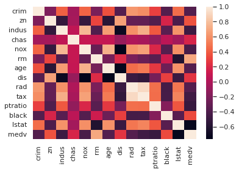

Regressão
Conteúdo
Regressão¶
from sklearn.tree import DecisionTreeRegressor
from sklearn.model_selection import train_test_split
from sklearn.tree import export_graphviz
from sklearn import metrics
from utils import carrega_dataset_boston_housing
import seaborn.apionly as sns
import matplotlib.pyplot as plt
import pandas as pd
import numpy as np
import graphviz
data = carrega_dataset_boston_housing()
data.drop(['Unnamed: 0'], axis=1, inplace=True)
data
/opt/hostedtoolcache/Python/3.10.4/x64/lib/python3.10/site-packages/seaborn/apionly.py:9: UserWarning: As seaborn no longer sets a default style on import, the seaborn.apionly module is deprecated. It will be removed in a future version.
warnings.warn(msg, UserWarning)
| crim | zn | indus | chas | nox | rm | age | dis | rad | tax | ptratio | black | lstat | medv | |
|---|---|---|---|---|---|---|---|---|---|---|---|---|---|---|
| 0 | 0.00632 | 18.0 | 2.31 | 0 | 0.538 | 6.575 | 65.2 | 4.09 | 1 | 296 | 15.3 | 396.9 | 4.98 | 24.0 |
| 1 | 0.02731 | 0.0 | 7.07 | 0 | 0.469 | 6.421 | 78.9 | 4.9671 | 2 | 242 | 17.8 | 396.9 | 9.14 | 21.6 |
| 2 | 0.02729 | 0.0 | 7.07 | 0 | 0.469 | 7.185 | 61.1 | 4.9671 | 2 | 242 | 17.8 | 392.83 | 4.03 | 34.7 |
| 3 | 0.03237 | 0.0 | 2.18 | 0 | 0.458 | 6.998 | 45.8 | 6.0622 | 3 | 222 | 18.7 | 394.63 | 2.94 | 33.4 |
| 4 | 0.06905 | 0.0 | 2.18 | 0 | 0.458 | 7.147 | 54.2 | 6.0622 | 3 | 222 | 18.7 | 396.9 | 5.33 | 36.2 |
| ... | ... | ... | ... | ... | ... | ... | ... | ... | ... | ... | ... | ... | ... | ... |
| 501 | 0.06263 | 0.0 | 11.93 | 0 | 0.573 | 6.593 | 69.1 | 2.4786 | 1 | 273 | 21.0 | 391.99 | 9.67 | 22.4 |
| 502 | 0.04527 | 0.0 | 11.93 | 0 | 0.573 | 6.12 | 76.7 | 2.2875 | 1 | 273 | 21.0 | 396.9 | 9.08 | 20.6 |
| 503 | 0.06076 | 0.0 | 11.93 | 0 | 0.573 | 6.976 | 91.0 | 2.1675 | 1 | 273 | 21.0 | 396.9 | 5.64 | 23.9 |
| 504 | 0.10959 | 0.0 | 11.93 | 0 | 0.573 | 6.794 | 89.3 | 2.3889 | 1 | 273 | 21.0 | 393.45 | 6.48 | 22.0 |
| 505 | 0.04741 | 0.0 | 11.93 | 0 | 0.573 | 6.03 | 80.8 | 2.505 | 1 | 273 | 21.0 | 396.9 | 7.88 | 11.9 |
506 rows × 14 columns
corr = data.corr()
corr
| crim | zn | indus | chas | nox | rm | age | dis | rad | tax | ptratio | black | lstat | medv | |
|---|---|---|---|---|---|---|---|---|---|---|---|---|---|---|
| crim | 1.000000 | -0.200469 | 0.406583 | -0.055892 | 0.420972 | -0.219247 | 0.352734 | -0.379670 | 0.625505 | 0.582764 | 0.289946 | -0.385064 | 0.455621 | -0.388305 |
| zn | -0.200469 | 1.000000 | -0.533828 | -0.042697 | -0.516604 | 0.311991 | -0.569537 | 0.664408 | -0.311948 | -0.314563 | -0.391679 | 0.175520 | -0.412995 | 0.360445 |
| indus | 0.406583 | -0.533828 | 1.000000 | 0.062938 | 0.763651 | -0.391676 | 0.644779 | -0.708027 | 0.595129 | 0.720760 | 0.383248 | -0.356977 | 0.603800 | -0.483725 |
| chas | -0.055892 | -0.042697 | 0.062938 | 1.000000 | 0.091203 | 0.091251 | 0.086518 | -0.099176 | -0.007368 | -0.035587 | -0.121515 | 0.048788 | -0.053929 | 0.175260 |
| nox | 0.420972 | -0.516604 | 0.763651 | 0.091203 | 1.000000 | -0.302188 | 0.731470 | -0.769230 | 0.611441 | 0.668023 | 0.188933 | -0.380051 | 0.590879 | -0.427321 |
| rm | -0.219247 | 0.311991 | -0.391676 | 0.091251 | -0.302188 | 1.000000 | -0.240265 | 0.205246 | -0.209847 | -0.292048 | -0.355501 | 0.128069 | -0.613808 | 0.695360 |
| age | 0.352734 | -0.569537 | 0.644779 | 0.086518 | 0.731470 | -0.240265 | 1.000000 | -0.747881 | 0.456022 | 0.506456 | 0.261515 | -0.273534 | 0.602339 | -0.376955 |
| dis | -0.379670 | 0.664408 | -0.708027 | -0.099176 | -0.769230 | 0.205246 | -0.747881 | 1.000000 | -0.494588 | -0.534432 | -0.232471 | 0.291512 | -0.496996 | 0.249929 |
| rad | 0.625505 | -0.311948 | 0.595129 | -0.007368 | 0.611441 | -0.209847 | 0.456022 | -0.494588 | 1.000000 | 0.910228 | 0.464741 | -0.444413 | 0.488676 | -0.381626 |
| tax | 0.582764 | -0.314563 | 0.720760 | -0.035587 | 0.668023 | -0.292048 | 0.506456 | -0.534432 | 0.910228 | 1.000000 | 0.460853 | -0.441808 | 0.543993 | -0.468536 |
| ptratio | 0.289946 | -0.391679 | 0.383248 | -0.121515 | 0.188933 | -0.355501 | 0.261515 | -0.232471 | 0.464741 | 0.460853 | 1.000000 | -0.177383 | 0.374044 | -0.507787 |
| black | -0.385064 | 0.175520 | -0.356977 | 0.048788 | -0.380051 | 0.128069 | -0.273534 | 0.291512 | -0.444413 | -0.441808 | -0.177383 | 1.000000 | -0.366087 | 0.333461 |
| lstat | 0.455621 | -0.412995 | 0.603800 | -0.053929 | 0.590879 | -0.613808 | 0.602339 | -0.496996 | 0.488676 | 0.543993 | 0.374044 | -0.366087 | 1.000000 | -0.737663 |
| medv | -0.388305 | 0.360445 | -0.483725 | 0.175260 | -0.427321 | 0.695360 | -0.376955 | 0.249929 | -0.381626 | -0.468536 | -0.507787 | 0.333461 | -0.737663 | 1.000000 |
sns.set_theme()
sns.set_theme("notebook")
sns.set(rc={"figure.figsize": [10, 6]})
sns.heatmap(corr);

Separação de dados em treino e teste, e seleção de variáveis¶
y = data[["medv"]]
X = data.loc[:,['indus','tax','ptratio', 'lstat', 'rm']]
X_train, X_test, y_train, y_test = train_test_split(
X, y, test_size=0.2, random_state=999)
Algoritmo de árvores de decisão¶
treereg = DecisionTreeRegressor(random_state=999, max_depth = 3, criterion = "squared_error")
treereg.fit(X_train, y_train)
dot_data = export_graphviz(treereg, feature_names=list(X.columns),
filled=True, rounded=True)
graph = graphviz.Source(dot_data)
graph.render("tree")
graph
---------------------------------------------------------------------------
FileNotFoundError Traceback (most recent call last)
File /opt/hostedtoolcache/Python/3.10.4/x64/lib/python3.10/site-packages/graphviz/backend/execute.py:81, in run_check(cmd, input_lines, encoding, quiet, **kwargs)
80 else:
---> 81 proc = subprocess.run(cmd, **kwargs)
82 except OSError as e:
File /opt/hostedtoolcache/Python/3.10.4/x64/lib/python3.10/subprocess.py:501, in run(input, capture_output, timeout, check, *popenargs, **kwargs)
499 kwargs['stderr'] = PIPE
--> 501 with Popen(*popenargs, **kwargs) as process:
502 try:
File /opt/hostedtoolcache/Python/3.10.4/x64/lib/python3.10/subprocess.py:966, in Popen.__init__(self, args, bufsize, executable, stdin, stdout, stderr, preexec_fn, close_fds, shell, cwd, env, universal_newlines, startupinfo, creationflags, restore_signals, start_new_session, pass_fds, user, group, extra_groups, encoding, errors, text, umask, pipesize)
963 self.stderr = io.TextIOWrapper(self.stderr,
964 encoding=encoding, errors=errors)
--> 966 self._execute_child(args, executable, preexec_fn, close_fds,
967 pass_fds, cwd, env,
968 startupinfo, creationflags, shell,
969 p2cread, p2cwrite,
970 c2pread, c2pwrite,
971 errread, errwrite,
972 restore_signals,
973 gid, gids, uid, umask,
974 start_new_session)
975 except:
976 # Cleanup if the child failed starting.
File /opt/hostedtoolcache/Python/3.10.4/x64/lib/python3.10/subprocess.py:1842, in Popen._execute_child(self, args, executable, preexec_fn, close_fds, pass_fds, cwd, env, startupinfo, creationflags, shell, p2cread, p2cwrite, c2pread, c2pwrite, errread, errwrite, restore_signals, gid, gids, uid, umask, start_new_session)
1841 err_msg = os.strerror(errno_num)
-> 1842 raise child_exception_type(errno_num, err_msg, err_filename)
1843 raise child_exception_type(err_msg)
FileNotFoundError: [Errno 2] No such file or directory: PosixPath('dot')
The above exception was the direct cause of the following exception:
ExecutableNotFound Traceback (most recent call last)
Input In [6], in <cell line: 7>()
3 dot_data = export_graphviz(treereg, feature_names=list(X.columns),
4 filled=True, rounded=True)
6 graph = graphviz.Source(dot_data)
----> 7 graph.render("tree")
8 graph
File /opt/hostedtoolcache/Python/3.10.4/x64/lib/python3.10/site-packages/graphviz/_tools.py:171, in deprecate_positional_args.<locals>.decorator.<locals>.wrapper(*args, **kwargs)
162 wanted = ', '.join(f'{name}={value!r}'
163 for name, value in deprecated.items())
164 warnings.warn(f'The signature of {func.__name__} will be reduced'
165 f' to {supported_number} positional args'
166 f' {list(supported)}: pass {wanted}'
167 ' as keyword arg(s)',
168 stacklevel=stacklevel,
169 category=category)
--> 171 return func(*args, **kwargs)
File /opt/hostedtoolcache/Python/3.10.4/x64/lib/python3.10/site-packages/graphviz/rendering.py:122, in Render.render(self, filename, directory, view, cleanup, format, renderer, formatter, neato_no_op, quiet, quiet_view, outfile, engine, raise_if_result_exists, overwrite_source)
118 filepath = self.save(filename, directory=directory, skip_existing=None)
120 args.append(filepath)
--> 122 rendered = self._render(*args, **kwargs)
124 if cleanup:
125 log.debug('delete %r', filepath)
File /opt/hostedtoolcache/Python/3.10.4/x64/lib/python3.10/site-packages/graphviz/_tools.py:171, in deprecate_positional_args.<locals>.decorator.<locals>.wrapper(*args, **kwargs)
162 wanted = ', '.join(f'{name}={value!r}'
163 for name, value in deprecated.items())
164 warnings.warn(f'The signature of {func.__name__} will be reduced'
165 f' to {supported_number} positional args'
166 f' {list(supported)}: pass {wanted}'
167 ' as keyword arg(s)',
168 stacklevel=stacklevel,
169 category=category)
--> 171 return func(*args, **kwargs)
File /opt/hostedtoolcache/Python/3.10.4/x64/lib/python3.10/site-packages/graphviz/backend/rendering.py:324, in render(engine, format, filepath, renderer, formatter, neato_no_op, quiet, outfile, raise_if_result_exists, overwrite_filepath)
320 raise exceptions.FileExistsError(f'output file exists: {os.fspath(outfile)!r}')
322 cmd += args
--> 324 execute.run_check(cmd,
325 cwd=filepath.parent if filepath.parent.parts else None,
326 quiet=quiet,
327 capture_output=True)
329 return os.fspath(outfile)
File /opt/hostedtoolcache/Python/3.10.4/x64/lib/python3.10/site-packages/graphviz/backend/execute.py:84, in run_check(cmd, input_lines, encoding, quiet, **kwargs)
82 except OSError as e:
83 if e.errno == errno.ENOENT:
---> 84 raise ExecutableNotFound(cmd) from e
85 raise
87 if not quiet and proc.stderr:
ExecutableNotFound: failed to execute PosixPath('dot'), make sure the Graphviz executables are on your systems' PATH
y_pred_tree = treereg.predict(X_test)
df=pd.DataFrame({'Actual':y_test.iloc[:,0], 'Predicted':y_pred_tree})
treemse = metrics.mean_squared_error(y_test, y_pred_tree)
treemae = metrics.mean_absolute_error(y_test, y_pred_tree)
print('Mean Squared Error:', treemse)
print('Mean Absolute Error:', treemae)
Mean Squared Error: 24.669935378079575
Mean Absolute Error: 3.738466370052424
Random Forest¶
from sklearn.ensemble import RandomForestRegressor
rf = RandomForestRegressor(n_estimators = 1000, random_state = 999, max_depth = 3)
# Train the model on training data
rf.fit(X_train, y_train.iloc[:,0])
predictions = rf.predict(X_test)
rfmse = metrics.mean_squared_error(y_test, predictions)
rfmae = metrics.mean_absolute_error(y_test, predictions)
print('Mean Squared Error:', rfmse)
print('Mean Absolute Error:', rfmae, "\n")
print('Mean Squared Error Reduction ratio:', 1 - (rfmse/treemse))
print('Mean Absolute Error Reduction ratio:', 1 - (rfmae/treemae))
Mean Squared Error: 14.33927430037819
Mean Absolute Error: 2.77559623000172
Mean Squared Error Reduction ratio: 0.4187550927628564
Mean Absolute Error Reduction ratio: 0.25755752352460026